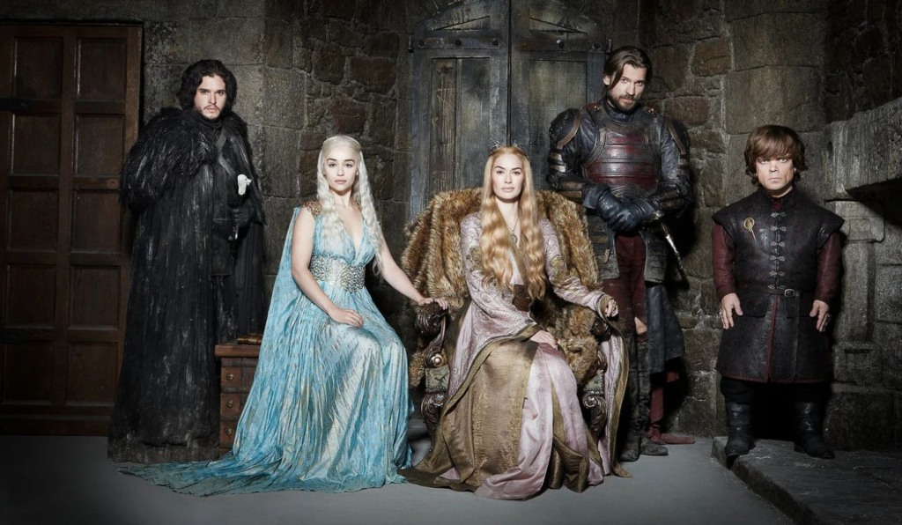
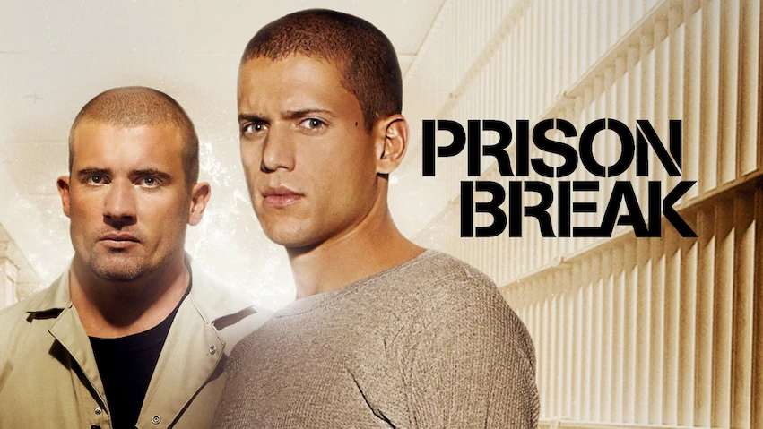
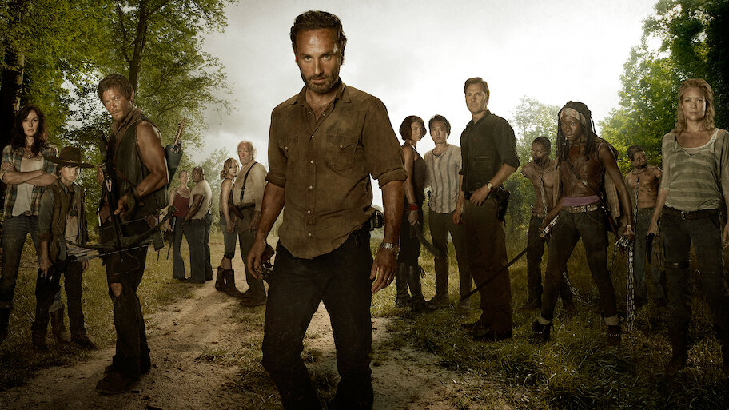
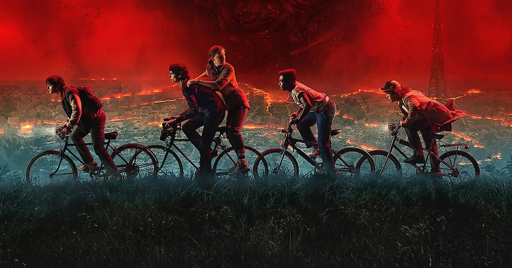

Game of Thrones (2011-2019)
Game of Thrones é uma série de televisão americana criada por David Benioff e D.B. Weiss para a HBO. Baseada na série de livros "As Crônicas de Gelo e Fogo", de George R. R. Martin, a série foi ao ar de 17 de abril de 2011 a 19 de maio de 2019, totalizando oito temporadas.
A trama é ambientada nos Sete Reinos de Westeros e segue várias famílias nobres enquanto lutam pelo controle do Trono de Ferro. A série é conhecida por suas complexas tramas políticas, personagens moralmente ambíguos e cenas de batalha épicas.
TrailerBreaking Bad (2008-2013)

Breaking Bad é uma série de televisão americana criada por Vince Gilligan. A série foi ao ar de 20 de janeiro de 2008 a 29 de setembro de 2013, totalizando cinco temporadas. A trama segue Walter White, um professor de química que se torna fabricante de metanfetamina após ser diagnosticado com câncer de pulmão.
A série é aclamada por sua narrativa envolvente, desenvolvimento de personagens e exploração de temas como moralidade, família e a luta pelo poder.
TrailerPrison Break (2005-2017)
Prison Break é uma série de televisão americana criada por Paul Scheuring. A série foi ao ar de 29 de agosto de 2005 a 30 de maio de 2017, totalizando cinco temporadas. A trama segue Michael Scofield, um engenheiro estrutural que se infiltra na prisão onde seu irmão, Lincoln Burrows, está condenado à morte por um crime que não cometeu.
A série é conhecida por seus enredos intrincados, reviravoltas surpreendentes e desenvolvimento de personagens, explorando temas como lealdade, sacrifício e a luta contra o sistema.
TrailerGrey's Anatomy (2005-presente)

Grey's Anatomy é uma série de televisão americana criada por Shonda Rhimes. A série estreou em 27 de março de 2005 e continua em produção, totalizando 18 temporadas até o momento. A trama se passa em um hospital de Seattle e segue a vida de médicos residentes, suas relações pessoais e profissionais, e os desafios que enfrentam no ambiente hospitalar.
A série é conhecida por seu elenco diversificado, enredos emocionais e representação realista de questões médicas e éticas.
TrailerThe Walking Dead (2010-2022)
The Walking Dead é uma série de televisão americana de drama e terror pós-apocalíptico criada por Frank Darabont. Baseada na série de quadrinhos homônima de Robert Kirkman, Tony Moore e Charlie Adlard, a série estreou em 31 de outubro de 2010 e foi concluída em 20 de novembro de 2022, após 11 temporadas.
A trama segue um grupo de sobreviventes em um mundo dominado por zumbis, enquanto lutam para permanecer vivos e encontrar segurança em meio ao colapso da sociedade. A série explora temas como a moralidade, a natureza humana e a luta pela sobrevivência em circunstâncias extremas.
TrailerStranger Things (2016-presente)
Stranger Things é uma série de televisão americana de ficção científica e terror criada pelos irmãos Duffer. A série estreou na Netflix em 15 de julho de 2016 e rapidamente se tornou um fenômeno cultural. A trama se passa na década de 1980 na cidade fictícia de Hawkins, Indiana, e segue um grupo de crianças que se deparam com eventos sobrenaturais e experimentos secretos do governo.
A série é conhecida por suas referências à cultura pop dos anos 80, seu elenco talentoso e sua narrativa envolvente, que mistura elementos de suspense, horror e amizade.
Trailer{kind=link}
{kind=link}
{kind=link}
/i.s3.glbimg.com/v1/AUTH_da025474c0c44edd99332dddb09cabe8/internal_photos/bs/2024/P/N/CXthYSTsKJmFJBZnGoyw/84471242-greys-anatomy.jpg){kind=link}
{kind=link}
{kind=link}